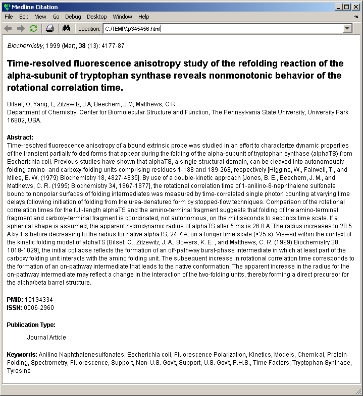

This demonstration illustrates how to use a Simple Object Access Protocol (SOAP) based web service from within MATLAB. In the example you will connect to the OpenBQS Bibliographic Query Service server at the European Bioinformatics Institute (http://industry.ebi.ac.uk/openBQS) and use it to retrieve information from MEDLINE.
For more information on the use of web services see the "Using Web Services in MATLAB" section of the MATLAB External Interface manual.
In MATLAB, you use the createClassFromWSDL function to call Web service methods. The function creates a MATLAB class based on the Web Services Description Language (WSDL) definition for the web service. To use the function you provide a URL for the WSDL definition of the service.
% OpenBQS WSDL definition URL wsdlURL = 'http://industry.ebi.ac.uk/openBQS/copies/BQSWebService.wsdl';
Create the classes. This will create a directory called @bqswebservice in the current directory.
className = createClassFromWSDL(wsdlURL)
className = bqswebservice
The @bqswebservice directory contains automatically generated files that implement the openBQS web service methods.
dir @bqswebservice
. getallbibrefs.m getentrydescription.m .. getallentries.m getmore.m bqswebservice.m getallids.m getnext.m contains.m getallvalues.m hasnext.m destroy.m getallvocabularynames.m query.m display.m getbibrefcount.m resetretrieval.m exists.m getbyid.m find.m getbyids.m
In addition to looking at the contents of the methods directory, you can also use the methods command to see what methods are available. You will notice that there are more methods available than files in the @bqswebservice directory. These are inherited methods that are available for all objects in MATLAB.
methods(bqswebservice)
Methods for class bqswebservice: bqswebservice getallbibrefs getbyid query contains getallentries getbyids resetretrieval destroy getallids getentrydescription display getallvalues getmore exists getallvocabularynames getnext find getbibrefcount hasnext
In order to use the web service, you must first create an instance of the bqswebservice.
bqsws = bqswebservice;
You can confirm that this is an instance of the bqswebservice using the class command.
class(bqsws)
ans = bqswebservice
The getbibrefcount method returns the total number of references in the repository.
getbibrefcount(bqsws)
ans =
12874602
The getallvocabularynames methods returns the names of all available controlled vocabularies.
getallvocabularynames(bqsws)
ans =
'MEDLINE2004/JournalArticle/properties'
'MEDLINE2004/*/citation_subset'
'MEDLINENEW/resource_types'
'MEDLINE2004/resource_types'
'MEDLINE2004/Person/properties'
'MEDLINENEW/JournalArticle/properties'
'repository_subsets'
'MEDLINE2004/*/publication_type'
You can access citation information for a specific MEDLINE entry using the getbyid method. This returns the information as Base64 encrypted XML.
infoBase64 = getbyid(bqsws,10194334,'xml');
You can decode the Base64 encryption using this Java method.
info = char(org.apache.xerces.impl.dv.util.Base64.decode(infoBase64)); Title = char(regexp(info,'(?<=<ArticleTitle>)[^<]+','match')) Authors = char(regexp(info,'(?<=<LastName>)[^<]+','match'))
Title = Time-resolved fluorescence anisotropy study of the refolding reaction of the alpha-subunit of tryptophan synthase reveals nonmonotonic behavior of the rotational correlation time. Authors = Bilsel Yang Zitzewitz Beechem Matthews
You can save the XML text to a file using the fprintf function.
filename = 'webservicedata.xml'; fid = fopen(filename,'w'); fprintf(fid,'%c',info); fclose(fid);
You can view the contents of the file using a web browser.
web(filename,'-browser')
The XML file is in a very generic format that is very convenient for storing and transferring data but is not particularly easy to read. An XSLT stylesheet describes transformations that can be used to convert the data in an XML file into a different type of document. There is a sample stylesheet for Medline data called medline.xsl in the biodemos directory. The xslt function using this to convert the XML file into a much more easily readable document. For more details on XSL see http://www.w3.org/Style/XSL .
xslt(filename,'medline.xsl','-web');
The function xml2struct converts an XML file into a MATLAB structure. The structure contains four fields, Name, Attributes, Data and Children. If a field has children then the Children field will be a structure with the same fields containing the nested information. This nesting can be many layers deep.
S = xml2struct(filename) firstLevel = S.Children(4) secondLevel = S.Children(4).Children(2) thirdLevel = S.Children(4).Children(2).Children
S =
Name: 'MedlineCitation'
Attributes: [1x2 struct]
Data: ''
Children: [1x19 struct]
firstLevel =
Name: 'DateCreated'
Attributes: []
Data: ''
Children: [1x7 struct]
secondLevel =
Name: 'Year'
Attributes: []
Data: ''
Children: [1x1 struct]
thirdLevel =
Name: '#text'
Attributes: []
Data: '1999'
Children: []